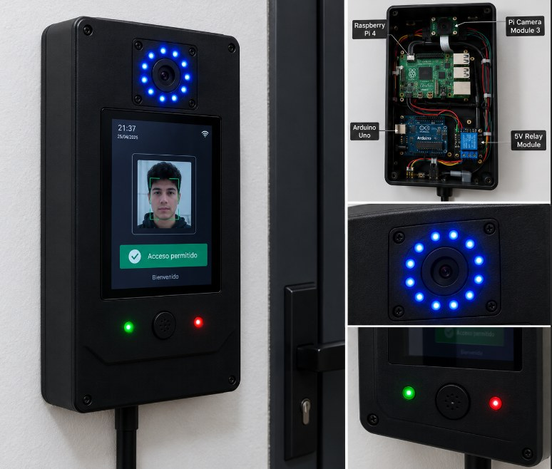

Tu rostro abre la puerta. Tus datos biométricos no salen del dispositivo.
BioLock Pro es un control de acceso con reconocimiento facial hecho con Raspberry Pi y Arduino. Reconoce a quien está autorizado, abre la cerradura y guarda quién entró y cuándo. Ninguna foto de registro ni vector facial viaja a la nube.
Pruébalo: elige quién se para frente a la puerta
Se guarda dentro de la Raspberry Pi
Reconocimiento y registro local.
- Todavía no hay eventos. Prueba un botón.
Se envía a la nube
Solo el evento y el identificador del usuario.
- Todavía no hay eventos. Prueba un botón.
Las llaves se prestan, se copian y se pierden
En muchas instituciones educativas y pequeñas empresas, la puerta de un laboratorio o una oficina se controla con llaves o tarjetas. Nadie sabe con certeza quién entró ni cuándo. Los sistemas biométricos comerciales existen, pero su costo los deja fuera de estos presupuestos.
- Accesos no autorizados, sin registro ni trazabilidadSi una llave circula, cualquiera puede entrar y no queda rastro.
- Robo y pérdida de bienes en instalaciones institucionalesLos equipos de laboratorio y oficina quedan expuestos.
- No se pueden auditar los accesos ni generar reportes de seguridadSin registro automático, no hay datos para revisar.
Qué pasa cuando alguien llega a la puerta
Todo el proceso corre dentro del dispositivo. Funciona aunque no haya internet.
Detecta que hay alguien
Un sensor de movimiento PIR avisa que una persona está frente a la puerta. El anillo de luz cambia de color y la cámara empieza a analizar.
Encuentra el rostro
El modelo YuNet localiza la cara en el video. La cámara Pi Camera Module 3 entrega una imagen reducida para el análisis y otra de alta resolución para las fotos.
Lo compara con los usuarios registrados
El modelo SFace convierte el rostro en un vector de 128 números y lo compara con los vectores guardados en el dispositivo. Acepta solo si la similitud supera 0,55 en dos cuadros seguidos.
Comprueba que sea una persona real En desarrollo
Antes de abrir, el sistema pedirá un reto corto, como girar la cabeza, para rechazar fotos y videos mostrados en un celular.
Abre, avisa y registra
El Arduino activa el relé que libera la cerradura, enciende el anillo en verde y suena el aviso. La Raspberry Pi guarda el evento y lo envía a la nube con el identificador del usuario.
El acceso se niega con luz roja y sonido, y queda guardado como intento fallido. Después de tres intentos seguidos se guarda la foto del intruso, suena la alarma y el administrador recibe una alerta.
Lo biométrico se queda dentro de la Raspberry Pi
Un rostro es un dato sensible. Por eso el sistema separa lo que identifica a una persona de lo que la institución necesita consultar.
Nunca sale del dispositivo
- Las fotos de registro de cada usuario
- Los vectores faciales con los que se reconoce
- Los respaldos biométricos: se guardan dentro de la Pi
Lo que sí llega a la nube
- El identificador del usuario, no su rostro
- El tipo de evento: acceso, intento fallido o alarma
- La foto de un intruso tras una alarma: 7 días en el dispositivo y 30 en el servidor
Pensado para la Ley 1581 de 2012 (Habeas Data) y el Decreto 1377 de 2013. La biometría es un dato sensible: el registro exige autorización explícita, el uso es voluntario y quien no la autorice puede entrar con un PIN personal. Los registros de acceso no se pueden modificar una vez creados.

Componentes comerciales, fáciles de conseguir
Todo el hardware se compra en Colombia y el software es libre o gratuito, sin licencias pagas.
- Cerebro
- Raspberry Pi 4 (4 GB) con Pi Camera Module 3. Ahí corren la detección, el reconocimiento y la base local.
- Control
- Arduino Uno R3 con módulo relé de 5 V. Maneja la cerradura, el anillo de luz, el sensor PIR, el zumbador y los LED verde y rojo.
- Interfaz
- Pantalla táctil de 3,5 pulgadas (480 × 320) y anillo de 12 LED NeoPixel que muestra el estado de un vistazo.
- Cerradura
- Solenoide de 12 V, diseñado como Fail-Secure: sin energía queda cerrado. Una salida de emergencia con batería propia está en desarrollo.
Se administra desde el navegador o el celular
El dispositivo, el panel y la aplicación se comunican por medio de una API en la nube. No se conectan directamente entre sí.
Panel web
Para el administrador de la institución. Ya está desplegado y probado con datos reales.
App móvil Android
Para atender alertas desde cualquier lugar.
- Inicio de sesión Funciona
- Estado del dispositivo y resumen del día Funciona
- Historial de accesos e intentos Funciona
- Alertas de alarma Funciona
- Notificación con foto del intruso En desarrollo
- Apertura remota con confirmación En desarrollo
Cada acción administrativa queda en un registro de auditoría. La base de datos rechaza cualquier intento de modificar o borrar un acceso ya registrado.
Qué funciona hoy y qué sigue
Es un prototipo en construcción. Aquí está lo que ya probamos y lo que falta.
Funcionando
- Reconocimiento facial en la Raspberry Pi, con pantalla táctil
- Anillo de luz, LED, zumbador y detección de presencia
- Alarma tras tres intentos fallidos
- Registro de usuarios desde la pantalla del dispositivo
- Envío de eventos a la nube, con cola si se cae el internet
- Panel web y app móvil conectados a la API
En desarrollo
- Detección de vida contra fotos y videos
- Salida de emergencia con batería independiente
- Botón interior para registrar la salida
- Menú de administración con rostro y PIN de respaldo
- Apertura remota y foto del intruso en la app
- Carcasa impresa en 3D
Mediciones preliminares. Las tasas de falsa aceptación y falso rechazo se están validando con un protocolo de pruebas; los objetivos son 1 % o menos y 5 % o menos.
Quiénes lo hicieron
Kevin Delgado
Hardware, inteligencia artificial, firmware, aplicación móvil e integración del sistema completo.
Jefferson Alvarez
API en la nube, base de datos, infraestructura y despliegue del panel web.
Estudiantes de Ingeniería de Sistemas de la Universidad Francisco de Paula Santander Ocaña, Facultad de Ingenierías. Proyecto Integrador II.